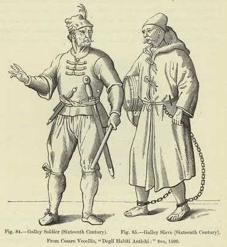

Поддерживать порядок и дисциплину на борту галер было непросто, однако в подавляющем большинстве случаев с этой задачей удавалось успешно справляться.

Существовали различные категории нарушителей, соответственно – и различная кара за их проступки. Никого не удивит, что на борту галер были воры и воровство. Ведь воровство было в отдельные периоды самой распространенной причиной для судебного осуждения на галеры, и не лишена была основания репутации галеры как «плота воров». Например, широкую известность получил вор по имени Амбревиль, пользовавшийся даже среди каторжников репутацией ловкого карманника. Как-то при посещении галеры епископ шутя сказал Амбревилю, что он знает его репутацию и следит за своим кошельком. Но в результате он лишился своего нагрудного креста! Современники рассказывали несколько версий этой истории. Баррас де ла Пенн в XVIII веке упоминал, что посетителей официально просили не брать на борт кинжалы и кошельки из опасения, что каторжники «освободят» гостей от этих предметов.
И осужденные, и рабы-мусульмане признавались виновными в воровстве и продаже всякого рода железных предметов и других вещей – даже цепей – из арсенала. Когда в Марселе или соседних городах вплоть до Авиньона имело место воровство драгоценностей и других ценных вещей, интендант галер был склонен объявлять тревогу, так как каторжники были известны как укрыватели краденного.
Для того, чтобы карать воров и других правонарушителей применялись различные наказания. Использовалось несколько разновидностей старинного наказания в виде прогона сквозь строй, описанного в памятной записке 1681 года о наказании для каторжников. Правонарушителя заставляли пробегать всю длину куршеи и по мере прохода его мимо каждой банки гребцы ударяли его деревянной ручкой швабры, которой они убирали свои банки. К восемнадцатому веку имелось по крайней мере шесть других наказаний, официально установленных для гребцов: 1) заковывание в ручные кандалы; 2) приковывание короткой цепью или двумя цепями к фальшборту; 3) отправка на тяжелые работы за пределами галеры на длительный срок и удержание заработанных ими денег на погашение их долгов; 4) телесные наказания палками или порка плетьми или несмолеными концами; 5) порка смолеными концами; 6)многократная порка каждый день, с различным количеством ударов каждый раз в зависимости от возраста наказываемого и тяжести преступления. Вообще порка на галерах, как и в парусном флоте, была обычным наказанием. Его суровость обычно определялась тяжестью проступка. Так, в 1666 году четыре или пять каторжников, виновных в продаже части своего вещевого имущества, чтобы купить выпивку, были подвергнуты порке по приказу интенданта галер Арнуля; он лично наблюдал за исполнением наказания и обещал более суровую кару за любые новые проступки. (Depping, Correspondance administrative, II, 911.)
В другом случае, как говорилось в инструкции для аргузинов на борту галер ("Memoire instructif sur la police de chiourme," Toulon, 24 May 1751), раб-мусульманин «среднего здоровья», который украл железные вещи из арсенала и направился в город, чтобы продать их, «получил в общей сложности более 250 ударов плетью за три отдельные порки, однако не раскрыл имя покупателя ворованных вещей. Он подвергался поркам в течение почти месяца, однако без угрозы для жизни. Таким образом можно назначать подобное наказание, если каторжник может его перенести.»
Помимо гуманных соображений, не в интересах короля было, чтобы здоровый гребец получал травмирующие увечья в результате наказания. С середины XVI века и позже выходили многочисленные указы, целью которых было предотвратить нанесение увечий гребцам излишне суровыми наказаниями. Конечно, исключительным случаем было, что комита отдавали под суд военного трибунала, как это однажды случилось в 1689 году, когда осужденный умер от плохого обращения с ним. Такой пример видимо должен был послужить назиданием для других комитов. В начале 18 века в качестве предупредительной меры даже капитан был лишен права применять «на месте» удары палками; это наказание могло быть наложено только с разрешения более высоких инстанций. В 1723 году капитаны направили петицию своему командующему Баррасу де ла Пенну с просьбой восстановить право применять наказание по их усмотрению, однако получили отказ.
В том же году Баррас проявил мягкость, когда один из его младших офицеров высказал мнение, что смертная казнь (обычно через повешение) не является чрезмерно суровой за некоторые преступления. Граф де Роанн (de Roannes) привлек внимание к имевшему место случаю заранее обдуманного нападения каторжника на унтер-офицера, в результате которого последний умер. Каторжник не раскаялся в своем преступлении даже после наказания, последовавшего через некоторое время и де Роанн считал, что преступник отделался слишком легко; по его мнению, каторжник должен был быть четвертован. «С Вашего позволения, – писал Роанн, – я буду так поступать в будущем, когда преступление совершено умышленно, так как ни один из этих жалких каторжников не испытывает ни малейшего страха перед виселицей.» Предложение молодого офицера не получило одобрения у его командующего.
Весной 1723 года еще одно свидетельство того, что офицеры являются сторонниками более строгих наказаний появилось в докладе министру, поступившем от бейлифа де Ланжерона:
«Так как я имею честь быть прикомандированным к галере Réale, моим долгом является информировать Вас о происшедшем на борту галеры одиннадцатого числа сего месяца… Месье де Гардан (Gardane), старший помощник (командующего) Галерами, прибыл на борт Réale для выполнения обычной инспекции, которую дежурный старший помощник совершает ежедневно с наступлением ночи. Осужденный с этой галеры вручил ему петицию от имени группы гребцов. В петиции содержалась просьба ,чтобы уволили их аргузина. Эта единодушная просьба показалась заговором и бунтом, старший помощник приказал заковать в ручные кандалы осужденного, который передал эту петицию. Не успел он отдать этот приказ, как все гребцы тут же вскочили на ноги и начали громко скандировать: “point de menottes” и “point d’argousin” [«долой наручники», «долой аргузина»]. Это вынудило месье де Гардана удалиться и доложить о данном происшествии Капитану охраны как о бунте.»
Крики гребцов продолжались всю ночь и не могли быть остановлены. Однако на следующее утро в присутствии бейлифа де Ланжерона «гребцы не проронили ни звука, когда ручные кандалы были надеты на целую группу из них» и бейлиф заметил, что они кажутся «такими покладистыми и покорными, как только можно пожелать». Тем временем срочно был созван военный трибунал для рассмотрения дела каторжника, который передал петицию. Решение, вынесенное позже в тот же день, гласило, что вручивший петицию «вышеупомянутый Клод Лежер Покле, осужденный галеры Réale, … будучи виновным в написании и передаче петиции от имени гребцов … и будучи главой бунта на упомянутой галере приговаривается к смертной казни через повешение на виду у всех галер… двенадцатое апреля 1723 года.» Объяснение поспешности и суровости наказания Покле (кстати, это был известный в свое время гравер) кроется в том, что дело его было интерпретировано как мятеж. Петиции от имени более чем одного человека были тогда запрещены во Франции, даже для законопослушных лиц. Прáва на коллективные петиции не было вплоть до 1789 года. (Jacques L. Godechot, Institutions de la France sous la Revolution, 69.)
Некоторые преступления против освященной христианством морали наказывались на галерах крайне жестоко, порою путем сожжения заживо (хотя такое практиковалось крайне редко), но ничто не шло в сравнение со страхом французских властей перед бунтом и ненавистью к его зачинщикам.